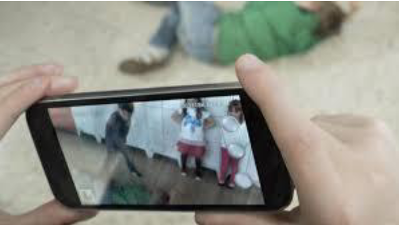

¿Qué es ciberacoso?
Ciberacoso es acoso o intimidación por medio de las tecnologías digitales. Puede ocurrir
en las redes sociales, las plataformas de mensajería, las plataformas de juegos y los
teléfonos móviles. Es un comportamiento que se repite y que busca atemorizar, enfadar o
humillar a otras personas. Por ejemplo:
El acoso cara a cara y el ciberacoso ocurren juntos a menudo. Pero el ciberacoso deja una huella digital; es decir, un registro que puede servir de prueba para ayudar a detener el abuso
